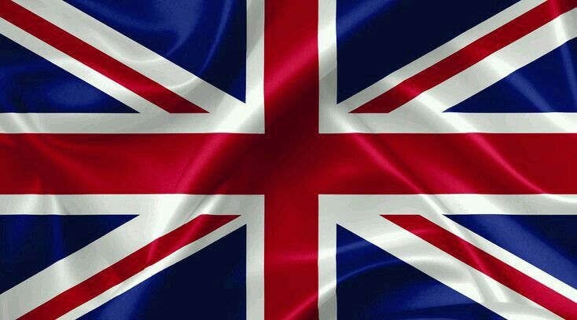
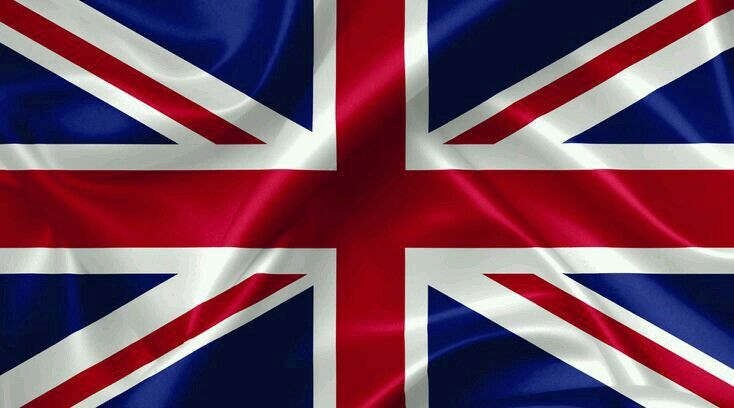

La Unión Soviética en la Segunda Guerra Mundial: Resistencia, Sacrificio y Victoria
Introducción
La participación de la Unión Soviética en la Segunda Guerra Mundial fue uno de los aspectos más significativos y decisivos del conflicto. Desde el ataque sorpresa de la Alemania nazi en junio de 1941 hasta la victoria final en 1945, la Unión Soviética desempeñó un papel central en la derrota del Eje y en la liberación de Europa del dominio del fascismo. Este ensayo examinará en detalle la contribución de la Unión Soviética a la Segunda Guerra Mundial, destacando su resistencia, sacrificio y victoria en uno de los momentos más críticos de la historia moderna.
Antecedentes: La Unión Soviética antes de la Guerra
Antes del estallido de la Segunda Guerra Mundial, la Unión Soviética había experimentado una serie de transformaciones políticas, económicas y sociales bajo el liderazgo de Josef Stalin. Desde la revolución bolchevique de 1917 y la creación de la Unión Soviética en 1922, el país había llevado a cabo un ambicioso programa de industrialización y colectivización agrícola, que transformó la economía y la sociedad.
Sin embargo, estas reformas también fueron acompañadas por la represión política y la violencia, como las purgas de Stalin en la década de 1930, que resultaron en la eliminación de opositores políticos reales o percibidos. A pesar de estos desafíos internos, la Unión Soviética emergió como una superpotencia en ascenso en la escena mundial, con un ejército poderoso y una industria en rápido crecimiento.
El Pacto Molotov-Ribbentrop y el Ataque a la Unión Soviética
A pesar de las tensiones ideológicas y territoriales entre la Unión Soviética y la Alemania nazi, en agosto de 1939, los dos países firmaron el Pacto Molotov-Ribbentrop, un acuerdo de no agresión que también incluía protocolos secretos para dividir Europa del Este en esferas de influencia. Este pacto sorprendió al mundo y permitió a Hitler concentrar sus esfuerzos en la invasión de Polonia sin el temor de una intervención soviética.
Sin embargo, el pacto fue efímero. En junio de 1941, Hitler lanzó una invasión masiva de la Unión Soviética, rompiendo el pacto y desencadenando la Operación Barbarroja, la mayor invasión militar de la historia. Esta invasión cogió a la Unión Soviética por sorpresa y desencadenó una guerra brutal que duraría casi cuatro años.
La Resistencia Soviética: Batallas Cruciales y Sacrificio Humano
La invasión alemana de la Unión Soviética fue rápida y feroz. Las fuerzas alemanas avanzaron rápidamente hacia el corazón del país, capturando ciudades importantes como Kiev, Smolensk y Leningrado en los primeros meses de la guerra. Sin embargo, la resistencia soviética fue tenaz y determinada.
Una de las batallas más importantes de la guerra fue la Batalla de Stalingrado, que tuvo lugar entre agosto de 1942 y febrero de 1943. Esta batalla épica marcó un punto de inflexión en la guerra en el Frente Oriental y se convirtió en un símbolo de la resistencia soviética contra la agresión alemana. La victoria soviética en Stalingrado fue el primer revés importante para las fuerzas alemanas y demostró que el Eje no sería capaz de derrotar a la Unión Soviética fácilmente.
Otra batalla crucial fue la Batalla de Kursk en julio de 1943, que fue la mayor batalla de tanques de la historia. La victoria soviética en Kursk marcó el comienzo de una serie de contraofensivas que llevaron a las fuerzas alemanas a la defensiva y allanaron el camino para la liberación de Europa del Este.
A lo largo de la guerra, la Unión Soviética sufrió enormes pérdidas humanas y materiales. Se estima que alrededor de 27 millones de ciudadanos soviéticos murieron durante la guerra, incluidos soldados y civiles. Esta pérdida masiva de vidas humanas dejó una profunda cicatriz en la sociedad soviética y se convirtió en un símbolo de sacrificio y heroísmo.
La Ofensiva Soviética y la Liberación de Europa del Este
A medida que la guerra progresaba, la Unión Soviética lanzó una serie de ofensivas masivas contra las fuerzas alemanas en el Frente Oriental. La Ofensiva de Bagration en 1944, por ejemplo, fue una de las mayores operaciones militares de la guerra y resultó en la liberación de Bielorrusia y la apertura del camino hacia Polonia y Alemania.
Otro hito importante fue la liberación de Varsovia en 1945, donde las fuerzas soviéticas, junto con el Ejército de Liberación Nacional polaco, pusieron fin a la ocupación alemana de la ciudad después de una feroz batalla. Esta victoria simbolizó el avance imparable de las fuerzas soviéticas hacia el corazón de Europa y allanó el camino para la derrota final del Eje.
El Papel de la Unión Soviética en la Victoria Aliada
La contribución de la Unión Soviética a la victoria de los Aliados en la Segunda Guerra Mundial fue enorme. La resistencia soviética en el Frente Oriental desempeñó un papel crucial en la derrota de Alemania y en la liberación de Europa del dominio nazi. Sin la tenacidad y el sacrificio del pueblo soviético, es poco probable que los Aliados hubieran logrado la victoria.
Además de su papel militar, la Unión Soviética también desempeñó un papel importante en la diplomacia y la política internacional durante la guerra. Stalin participó en conferencias clave con los líderes de los Aliados, como la Conferencia de Teherán en 1943 y la Conferencia de Yalta en 1945, donde se discutieron los planes para la posguerra y se acordaron los términos de la rendiciónalemana.
Consecuencias y Legado
La Segunda Guerra Mundial tuvo enormes consecuencias para la Unión Soviética y su pueblo. A pesar de la victoria, el país sufrió enormes pérdidas humanas y materiales que dejaron una marca indeleble en la sociedad y la cultura. La guerra también consolidó la posición de la Unión Soviética como una de las principales potencias mundiales y contribuyó a la formación de un nuevo orden mundial en el que Estados Unidos y la Unión Soviética emergerían como superpotencias rivales.
Además, la Segunda Guerra Mundial aceleró el proceso de descolonización en todo el mundo y sentó las bases para el surgimiento de movimientos de independencia en Asia, África y América Latina. La victoria sobre el fascismo también fortaleció el compromiso de la Unión Soviética con la expansión del comunismo y la promoción de la revolución socialista en todo el mundo.
Conclusiones
La participación de la Unión Soviética en la Segunda Guerra Mundial fue uno de los aspectos más importantes y decisivos del conflicto. La resistencia soviética en el Frente Oriental desempeñó un papel crucial en la derrota de Alemania y en la liberación de Europa del dominio nazi. A través de su sacrificio y determinación, el pueblo soviético demostró que la tiranía y la opresión pueden ser derrotadas, y que la libertad y la democracia prevalecerán en última instancia. La Unión Soviética en la Segunda Guerra Mundial fue un ejemplo de coraje, heroísmo y solidaridad que sigue siendo recordado y celebrado hasta el día de hoy.

 
